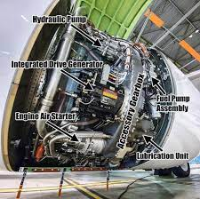
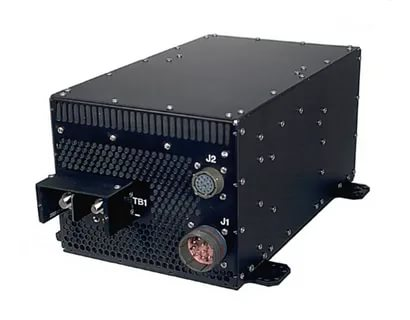
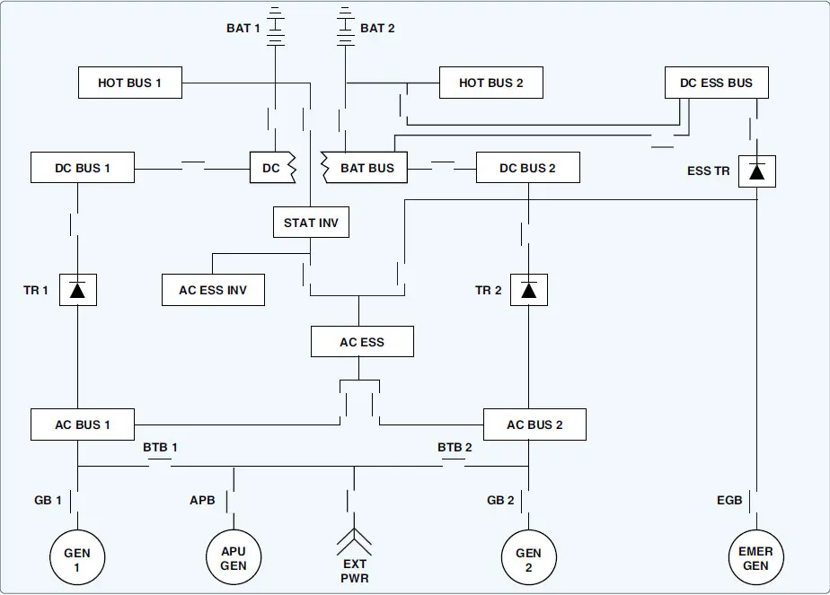

-
AC Power
AC Power comes from the generators which mount on the accessory gear box of each engine (integrated drive), and the auxiliary power unit(constant speed).

-
DC Power
DC power comes from transformer rectifier units (TRUs).

-
Distribution
When the aircraft engines are online the generators supply AC voltage to distibution boxes. Power will then be distributed to the main and essential busses, as well as the TRUs which returns DC voltage for distribution.
